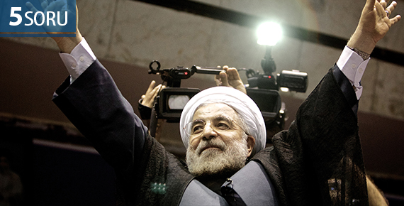

- İran Nükleer Mütabakatının Muhtemel Bölgesel SonuçlarıPerspektif 22 Temmuz 2015 Çarşambaİran nükleer mutabakatı Ortadoğu’daki düzen arayışlarını nasıl etkileyecek? Nükleer mutabakatın ardından ekonomide hangi gelişmeler beklenmeli?

- 5 Soru: İran Nükleer Anlaşmasının Ekonomik BoyutuYorum 21 Temmuz 2015 Salıİran ile P5+1 ülkeleri arasında yapılan anlaşmanın ekonomik boyutunu SETA Ekonomi Direktörlüğü’nden Hatice Karahan değerlendirdi.
- Türkiye’nin Koalisyon Tecrübesi: Modeller ve Siyasal GerçekliklerPerspektif 16 Temmuz PerşembeKoalisyon modelleri nelerdir? Türkiye’de genel seçimler ile oluşturulan koalisyonlar hangi modele uygundur?

- 7 Haziran 2015 Seçimi ve SonrasıAnaliz 15 Temmuz ÇarşambaBu analiz, 13 yıllık AK Parti dönemine odaklanarak, 7 Haziran seçiminin Türkiye siyasi hayatı açısından etkisini ve ortaya çıkan sonucun yapısal bir duruma mı işaret ettiğini; yoksa geçici ve konjonktürel bir özellik mi taşıdığına odaklanmaktadır.
- Denetim ve Özgürlük İkileminde İnternet ErişimiAnaliz 13 Temmuz PazartesiBu çalışma Türkiye’deki erişimin engellenmesi rejimine yoğunlaşarak geri planda kalan teknik ve hukuki boyutu tartışmayı amaçlamaktadır.
- Rusya-AB-Türkiye Üçgeninde Türk AkımıPerspektif 07 Temmuz SalıGüney Akım yerine Türk Akımı’nın tercih edilmesinin nedenleri nelerdir? Türk Akımı’nın muhtemel geçiş güzergahının diğer projelere etkisi nasıl olur?

- Afganistan Siyasetini Anlama KılavuzuRapor 06 Temmuz 2015 PazartesiElinizdeki rapor, anlamak için tanımak gerektiği gerçeğinden yola çıkılarak meseleye dair bir “giriş kitabı” olması hedefiyle ve Afganistan’ın genel fotoğrafını çekme gayretiyle hazırlanmıştır.